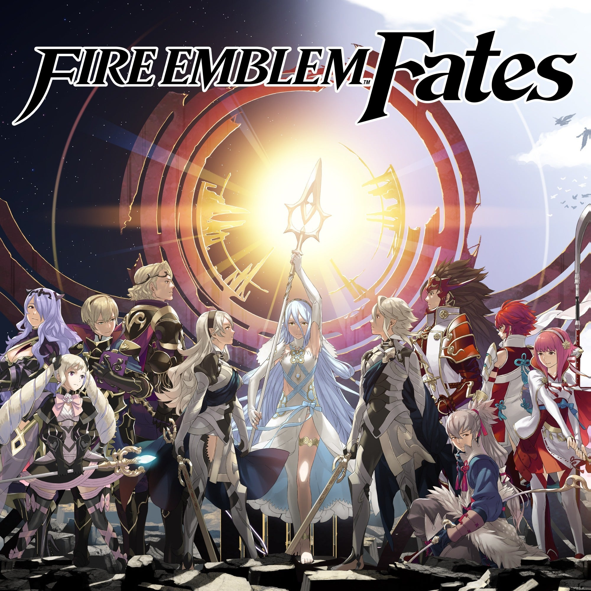

¿Que es Fire Emblem Fates?
Fire Emblem Fates, es el decimocuarto juego de la serie Fire Emblem y el segundo en ser lanzado para la consola Nintendo 3DS. Este juego fue revelado oficialmente en el Nintendo Direct del 14 de enero de 2015. Se ha establecido que este juego no tiene relación alguna con anteriores entregas de la serie en términos de argumento y personajes. Los diseños y artes oficiales de los personajes vienen de la mano del ilustrador japonés Yūsuke Kozaki, quien también es responsable de los diseños de los personajes de Fire Emblem: Awakening, mientras que la historia fue escrita por el mangaka y novelista Shin Kibayashi. El Nintendo Direct japonés del 2 de abril de 2015 reveló que habrán dos versiones separadas del juego: Fire Emblem Fates Birthrigth y Fire Emblem Fates Conquest. Los jugadores que compren la versión Birthrigth combatirán del lado del ejército de Hoshido, mientras que los que adquieran la versión Conquest estarán de parte del ejército de Nohr.
Existe una tercera versión llamada Fire Emblem Fates: Revelation en la que el jugador sigue una historia donde no elige ningun reino, pero dicha versión solo está disponible como DLC de pago, el cual salió a la venta el 11 de marzo con un costo de $15.99. Una versión limitada del juego poseerá las 3 historias juntas. El 16 de junio de 2015, en la Electronic Entertainment Expo (E3) del mismo año, se dio a conocer que el juego sería lanzado en Europa con el nombre definitivo: Fire Emblem Fates. Un tráiler del juego fue lanzado ese día, confirmando a la vez, que el juego estaría doblado al inglés.

Desarrolladora: inteligent systems